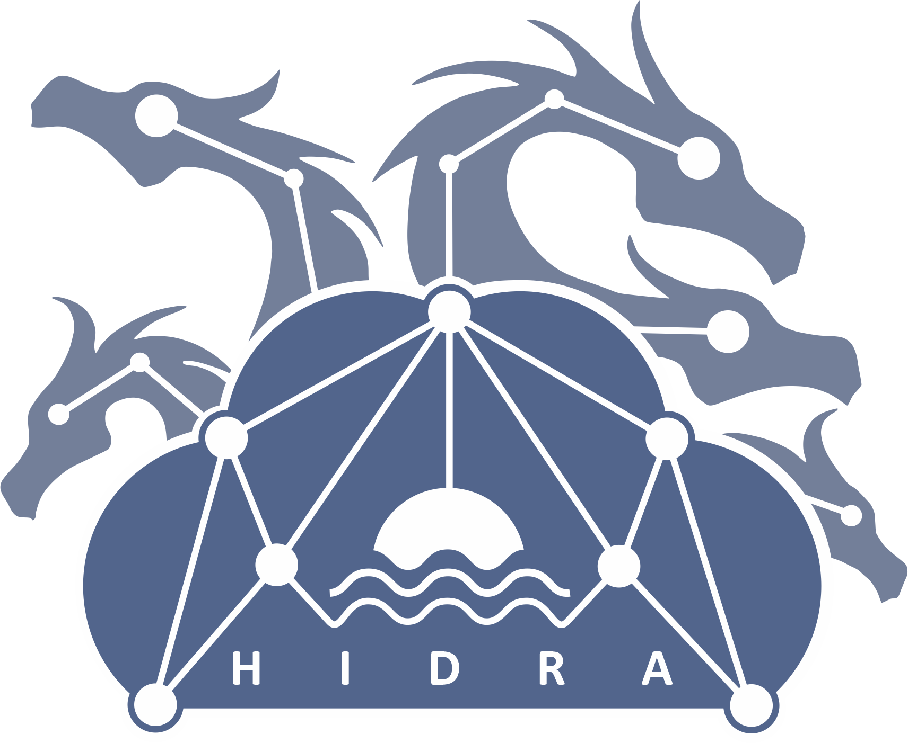

Stran prikazuje tekočo 72-urno napoved višine morske gladine modela HIDRA2[1] za lokacijo mareografske postaje v Kopru. 72-urna napoved je prikazana z modro, s črno so prikazane izmerjene višine morske gladine. Napoved je prikazana kot povprečje vseh 50 ansambelskih napovedi skupaj s standardnim odklonom napovedi. Opozorilne vrednosti so označene z rumeno, oranžno in rdečo.
HIDRA2[1] je naslednja generacija globokega modela za napovedovanje višine morske gladine, pri čemer je model HIDRA1[2] prva. Modeli so rezultat sodelovanja Laboratorija za umetne vizualne spoznavne sisteme, Fakultete za računalništvo in informatiko, Univerze v Ljubljani, Morske biološke postaje Piran, Nacionalnega inštituta za biologijo in Agencije Republike Slovenije za okolje. Napovedi izdeluje na podlagi ansambelske vremenske napovedi Evropskega centra za srednjeročno napovedovanje vremena (ECMWF) in meritev morske gladine na Mareografski postaji Koper v zadnjih 24 urah (vir: ARSO). Učna množica za model HIDRA vsebuje modelske napovedi ECMWF ansambla med letoma 2006 in 2020, ter meritve gladine morja v Kopru za isto obdobje.
[1] Rus, M., Fettich, A., Kristan, M., and Ličer, M.: HIDRA2: deep-learning ensemble sea level and storm tide forecasting in the presence of seiches – the case of the northern Adriatic, Geosci. Model Dev., 16, 271–288, https://doi.org/10.5194/gmd-16-271-2023, 2023.
[2] Lojze Žust, Anja Fettich, Matej Kristan, and Matjaž Ličer: HIDRA 1.0: deep-learning-based ensemble sea level forecasting in the northern Adriatic, Geosci. Model Dev., 14, 2057–2074, https://doi.org/10.5194/gmd-14-2057-2021, 2021.